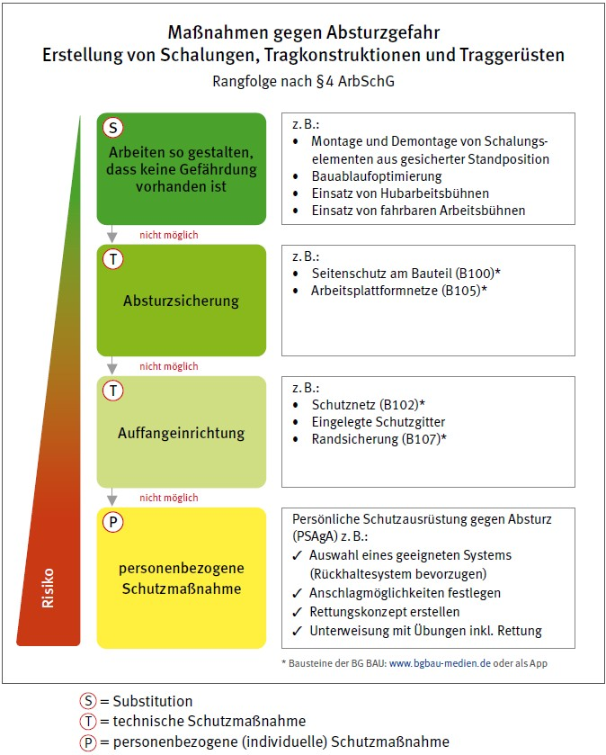

Bei einer Gefährdungsbeurteilung ermittelt und bewertet die Unternehmerin oder der Unternehmer die Gefährdungen für ihre bzw. seine Beschäftigten, die sich im Rahmen ihrer Tätigkeit aufgrund des eingesetzten Arbeitsmittels, des gewählten Arbeitsverfahrens und der Arbeitsumgebung ergeben können. Sie hat das Ziel, Maßnahmen festzulegen, um eine Gefährdung für Leben und Gesundheit zu vermeiden und eventuell verbleibende Gefährdungen so gering wie möglich zu halten.
Erheblichen Einfluss auf die verbleibenden Gefährdungen hat bereits die Auswahl des jeweiligen Schalungssystems.
Das Ergebnis der Gefährdungsbeurteilung ist zu dokumentieren, Schutzmaßnahmen festzulegen, deren Umsetzung zu organisieren und ihre Wirksamkeit zu kontrollieren.

Siehe § 5 Arbeitsschutzgesetz (ArbSchG) und Technische Regeln für Betriebssicherheit (TRBS 1111).
Bei der Ermittlung der Gefährdungen sind beispielsweise zu berücksichtigen:
Gefährdungen bei Schalungs-, Tragkonstruktions- und Traggerüstarbeiten können sich beispielsweise ergeben durch
Übernimmt die Unternehmerin oder der Unternehmer einen Auftrag, dessen Durchführung zeitlich und örtlich mit Aufträgen anderer Unternehmerinnen oder Unternehmern zusammenfällt, sind sie verpflichtet, sich untereinander abzustimmen, soweit dies zur Feststellung bzw. Vermeidung gegenseitiger Gefährdungen erforderlich ist.
Die beim Beurteilen der Gefährdungen gewonnenen Erkenntnisse bilden die Basis für das Festlegen der erforderlichen Maßnahmen für die Sicherheit und Gesundheit der Beschäftigten. Die Maßnahmen müssen dem Stand der Technik, der Arbeitsmedizin und Hygiene sowie den Anforderungen der Ergonomie entsprechen. Rechtsverbindliche Anforderungen in Gesetzen, Verordnungen und Vorschriften sowie gesicherte arbeitswissenschaftliche Erkenntnisse sind zu berücksichtigen. Die Maßnahmen müssen geeignet sein, die ermittelten Gefährdungen zu beseitigen bzw. so weit zu reduzieren, dass das Schutzziel erreicht wird.
Werden die in den Technischen Regeln für Arbeits- und Gesundheitsschutz genannten Maßnahmen eingehalten, so ist davon auszugehen, dass die Schutzziele erreicht werden. Es gilt dann die Vermutungswirkung, siehe. z. B. TRBS 2121 "Gefährdung von Beschäftigten durch Absturz – Allgemeine Anforderungen".
Weicht die Unternehmerin oder der Unternehmer von den in den Technischen Regeln genannten Maßnahmen ab oder fehlen diese, muss durch andere Maßnahmen mindestens die gleiche Sicherheit und der gleiche Schutz der Gesundheit der Beschäftigten erreicht werden.
Bei der Verwendung von Schalungen, Tragkonstruktionen und Traggerüsten sind, in Abhängigkeit vom Objekt oder der Konstruktion, geeignete Maßnahmen zum Schutz gegen Absturz entsprechend der Rangfolge gemäß § 4 Absatz 2 Satz 2 BetrSichV (Absturzsicherung, Auffangeinrichtung, persönliche Schutzausrüstung gegen Absturz) vor Beginn der Arbeiten zu planen, auszuwählen und festzulegen.
Rangfolge der Schutzmaßnahmen
Bei der Auswahl der Maßnahmen hat der Unternehmer oder die Unternehmerin den im ArbSchG festgelegten Grundsatz der Vermeidung von Gefährdungen zu prüfen und wenn möglich umzusetzen. Beim Festlegen von Maßnahmen ist die Rangfolge der Schutzmaßnahmen nach § 4 ArbSchG zu berücksichtigen. Die Ergebnisse sind zu dokumentieren und die Maßnahmen auf ihre Wirksamkeit zu kontrollieren.

Abb. 1 Rangfolge der Schutzmaßnahmen bei der Erstellung von Schalungen, Tragkonstruktionen und Traggerüsten
Die planerischen, statischen und organisatorischen Vorgaben der Bauherrschaft oder der Auftraggebenden hat die Unternehmerin oder der Unternehmer in Abhängigkeit von den ausgewählten Arbeitsverfahren, in ihrer bzw. seiner Gefährdungsbeurteilung zu berücksichtigen und in der daraus resultierenden Montageanweisung festzulegen.
Vorgaben können z. B. sein:
Es gehört zu den Pflichten der Bauherrschaft, die beschriebenen Voraussetzungen an der baulichen Anlage zu erfüllen, damit die ausführende Unternehmerin oder der ausführende Unternehmer die ihr oder ihm obliegenden Sicherheits- und Gesundheitsschutzpflichten erfüllen kann.

Siehe §§ 2 und 3 Baustellenverordnung.
Geeignete Maßnahmen und vorhandene Einrichtungen zur Erfüllung können z. B. sein:
Hat die Unternehmerin oder der Unternehmer Bedenken gegen die vorgesehene Art der Ausführung, insbesondere hinsichtlich der Sicherung gegen Unfallgefahren, so haben sie diese den Auftraggebenden unverzüglich – möglichst schon vor Beginn der Arbeiten – schriftlich mitzuteilen.
Die Unternehmerin oder der Unternehmer hat vor und während der Ausführung der Arbeiten die Hinweise der Koordinierenden (Planung/Durchführung) nach der Baustellenverordnung und des Sicherheits- und Gesundheitsschutzplanes zu berücksichtigen.